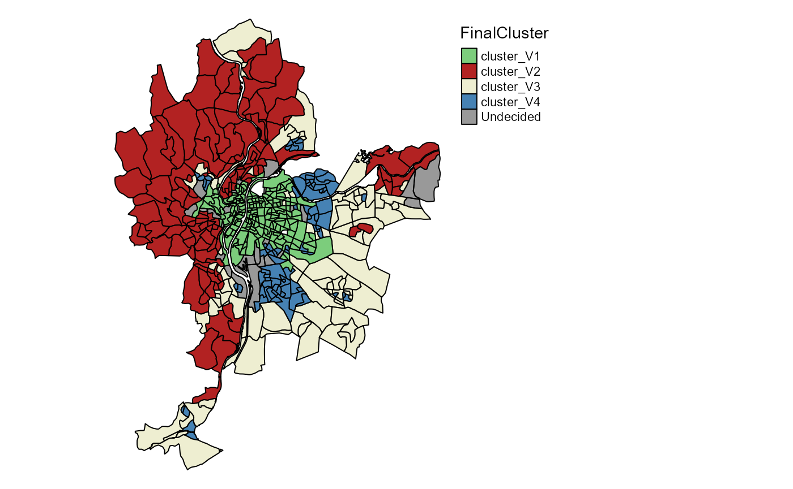
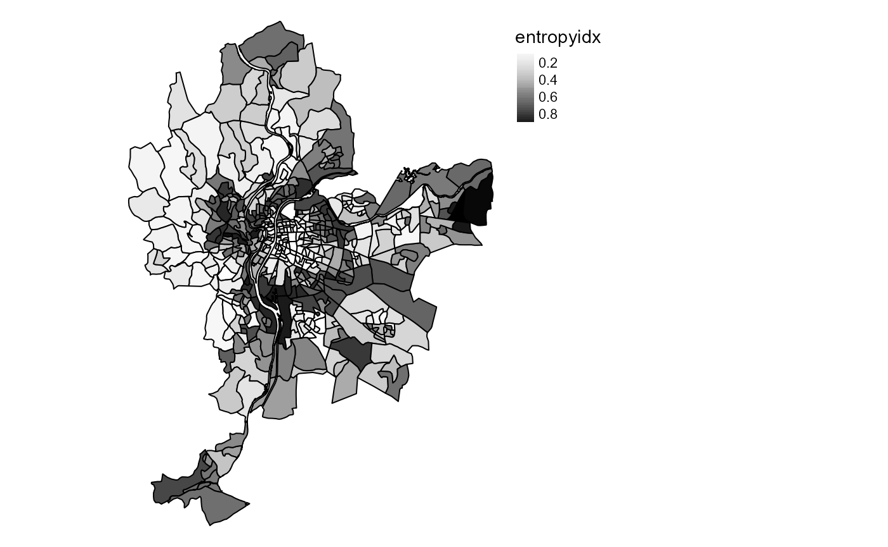
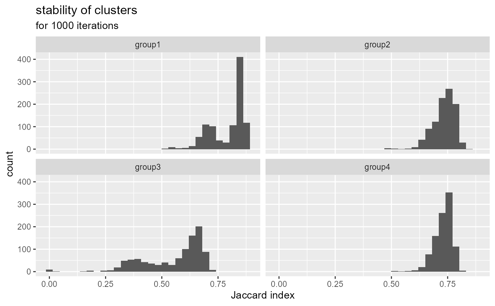
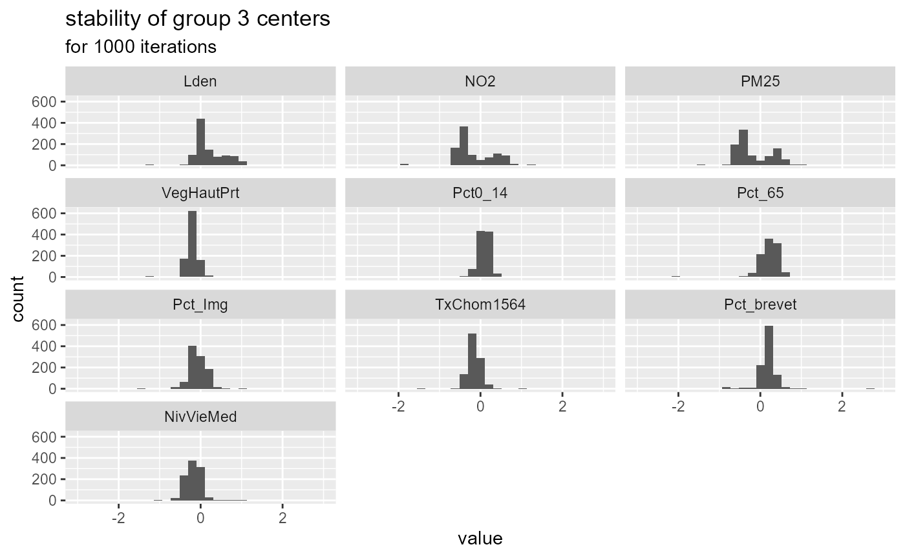

Spatial Fuzzy CMean with R
Jeremy Gelb
02/04/2021
Source:vignettes/introduction.Rmd
introduction.RmdIntroduction
This document is a short introduction to the package geocmeans. It implements fuzzy classification methods bringing spatial information and neighbouring in its calculation
In their article, Cai, Chen, and Zhang (2007) described the method, originally applied in the analysis of brain imagery. The generalized version of the spatial fuzzy c-means is presented by Zhao, Jiao, and Liu (2013).
Gelb and Apparicio (2021) applied the method to socio-residential and environmental data comparing the results with other unsupervised classification algorithms (in French).
There are actually numerous packages and functions to perform unsupervised classification in R (hclust, kmeans, cmeans, factoextra, etc.). However, these methods are not always well-suited to analyze spatial data. Indeed, they do not account for spatial information such as proximity or contiguity between observations. This may lead to solutions for which close observations end up in different groups event though they are very similar.
To our knowledge, the package ClustGeo is the only package proposing an unsupervised classification method which directly consider spatial proximity between observations. The proposed approach is appealing because the user can select a parameter (alpha) that controls the weight of the spatial distance matrix (calculated between observations with their locations) versus the semantic distance matrix (calculated between observations with their variables).
However, this method belongs to the category of “hard-clustering” algorithms. Each observation ends up in one cluster/group. The main draw-back here is the difficulty to identify observations that are undecided, at the frontier of two clusters/groups. The soft or fuzzy clustering algorithms provide more information because they calculate the “probability” of each observation to belong to each group.
The algorithms SFCM (spatial fuzzy c-means) and SGFCM (spatial generalized fuzzy c-means) propose to combine the best of both worlds.
The package geocmeans is an implementation in R of these methods. It comes with a set of functions to facilitate the analysis of the final membership matrices:
- calculating many quality indices (coming mainly from the package fclust)
- mapping the results
- giving summary statistics for each cluster/group
- a shiny app to investigate dynamically the results.
The general workflow for applying a spatial fuzzy clustering algorithm with geocmeans is described with the following figure.

Image Title
Loading the packages and the data
geocmeans comes with a toy dataset LyonIris, combining many demographic and environmental variables aggregated at the scale of the Iris (aggregated units for statistical information) in Lyon (France).
Note that the dataset used for a fuzzy classification can only contain continuous variables. For dataset with categorical variables, one could start with a PCA (Principal Component Analysis), MCA (multiple Correspondence Analysis) or a MDFA (Mixed Data Factor Analysis) and uses the obtained factors as inputs for the clustering.
Before starting the analysis, the data must be standardized because most of the calculus is based on Euclidean distance (we plan to also include Manhattan distance in a future release).
#charging packages and data
library(geocmeans)
library(ggplot2)
library(ggpubr)
library(dplyr)
library(viridis)
library(spdep)
library(tmap)
data(LyonIris)
# selecting the columns for the analysis
AnalysisFields <-c("Lden","NO2","PM25","VegHautPrt","Pct0_14",
"Pct_65","Pct_Img","TxChom1564","Pct_brevet","NivVieMed")
# rescaling the columns
Data <- sf::st_drop_geometry(LyonIris[AnalysisFields])
for (Col in names(Data)){
Data[[Col]] <- scale(Data[[Col]])
}Classical Kmeans
To explore the dataset and choose the right number of cluster/groups (k) we propose to start with a classical kmeans.
# finding the best k by using the r2 of the classification
# trying for k from 2 to 10
R2s <- sapply(2:10,function(k){
Clust <- kmeans(Data,centers=k,iter.max = 150)
R2 <- Clust$betweenss / Clust$totss
return(R2)
})
Df <- data.frame(K=2:10,
R2 = R2s)
ggplot(Df)+
geom_line(aes(x=K,y=R2s))+
geom_point(aes(x=K,y=R2s),color="red")+
xlab("Number of groups")+
ylab("R2 of classification")Impact of the number of groups on the explained variance
By plotting the R-squared of the kmeans classification for each k between 2 and 10, we can see a first elbow at k=3. But this small number of groups leads to a classification explaining only 43% of the original data variance. We decide to keep k=4 to have one more group in the analysis.
Let us map the obtained groups.
KMeanClust <- kmeans(Data,centers=4,iter.max = 150)
LyonIris$Cluster <-paste("cluster",KMeanClust$cluster,sep="_")
# mapping the groups
tm_shape(LyonIris) +
tm_fill("Cluster", palette = c("cluster_1"="palegreen3",
"cluster_2"="firebrick",
"cluster_3"="lightyellow2",
"cluster_4"="steelblue")) +
tm_borders("black") +
tm_layout(legend.outside = TRUE, frame = FALSE)Clusters identified by classical k-means
We can clearly distinguish 4 strong spatial structures, but with some mixing between the clusters.
We could now compare this solution with a classical c-means algorithm.
Classical c-means and generalized c-means
The classical c-means is a simple method to perform fuzzy unsupervised classification. The package geocmeans proposes the function CMeans. We set the fuzziness degree (m) to 1.5.
We do not present the algorithm here, but only the two main formulas.
The first one is used to update the values of the membership matrix at each iteration \(u_ik\)
\[u_{ik} = \frac{(||x_{k} - v{_i}||^{2}) ^{(-1/(m-1))}}{\sum_{j=1}^c(||x_{k} - v{_j}||^2 )^{(-1/(m-1))}}\] And the second one to update the centers of the clusters
\[v_{i} = \frac{\sum_{k=1}^N u_{ik}^m(x_{k})}{\sum_{k=1}^N u_{ik}^m}\]
With :
- \(x_k\) the values of the observation \(k\)
- \(v_i\) the values of the center of the cluster \(i\)
- \(c\) the number of clusters
- \(m\) the fuzziness index
Cmean <- CMeans(Data,4,1.5,500,standardize = FALSE, seed = 456, tol = 0.00001, verbose = FALSE)We can now use the function calcqualityIndexes which combines many indices from the package fclust to analyze the quality of the classification. We will use these values later for the purpose of comparisons among the different algorithms.
calcqualityIndexes(Data, Cmean$Belongings, m = 1.5)## $Silhouette.index
## [1] 0.362851
##
## $Partition.entropy
## [1] 0.7320161
##
## $Partition.coeff
## [1] 0.6070524
##
## $XieBeni.index
## [1] 1.352347
##
## $FukuyamaSugeno.index
## [1] 1860.772
##
## $Explained.inertia
## [1] 0.3018179Note, geocmeans also proposes a so-called generalized version of the c-means algorithm. It is known to accelerate convergence and yield less fuzzy results by adjusting the membership matrix at each iteration. It requires an extra beta parameter controlling the strength of the modification. The modification only affects the formula updating the membership matrix.
\[u_{ik} = \frac{(||x_{k} - v{_i}||^{2} - \beta_k) ^{(-1/(m-1))}}{\sum_{j=1}^c(||x_{k} - v{_j}||^2 - \beta_k)^{(-1/(m-1))}}\]
with \(\beta_k = min(||x_{k} - v||^2)\) and \(0 \leq \beta \leq 1\).
To select an appropriate value for this parameter, we will try all the possible values between 0 and 1 with a step of 0.05.
beta_values <- selectParameters("GFCM",data = Data, k = 4, m = 1.5,
beta = seq(0,1,0.05), spconsist = FALSE,
tol = 0.00001, seed = 456)
knitr::kable(beta_values[c("beta","Silhouette.index","XieBeni.index","Explained.inertia")],
col.names = c("beta", "silhouette index",
"Xie and Beni index", "explained inertia"),digits = 3)| beta | silhouette index | Xie and Beni index | explained inertia |
|---|---|---|---|
| 0.00 | 0.363 | 1.352 | 0.302 |
| 0.05 | 0.365 | 1.268 | 0.310 |
| 0.10 | 0.366 | 1.193 | 0.319 |
| 0.15 | 0.365 | 1.128 | 0.327 |
| 0.20 | 0.361 | 1.071 | 0.336 |
| 0.25 | 0.360 | 1.020 | 0.345 |
| 0.30 | 0.363 | 0.984 | 0.354 |
| 0.35 | 0.361 | 0.963 | 0.363 |
| 0.40 | 0.370 | 0.943 | 0.372 |
| 0.45 | 0.369 | 0.924 | 0.381 |
| 0.50 | 0.366 | 0.907 | 0.390 |
| 0.55 | 0.365 | 0.891 | 0.399 |
| 0.60 | 0.360 | 0.876 | 0.409 |
| 0.65 | 0.358 | 0.863 | 0.418 |
| 0.70 | 0.358 | 0.852 | 0.428 |
| 0.75 | 0.353 | 0.843 | 0.437 |
| 0.80 | 0.347 | 0.838 | 0.447 |
| 0.85 | 0.340 | 0.837 | 0.456 |
| 0.90 | 0.332 | 0.844 | 0.464 |
| 0.95 | 0.323 | 0.861 | 0.471 |
| 1.00 | 0.317 | 0.919 | 0.475 |
Considering the table above, we select beta = 0.7, it maintains a good silhouette index, and increases Xie and Beni index and explained inertia. Let us compare the results of GFCM and FCM.
GCmean <- GCMeans(Data,k = 4,m = 1.5, beta = 0.7,500,standardize = FALSE, seed=456,
tol = 0.00001, verbose = FALSE)
r1 <- calcqualityIndexes(Data,GCmean$Belongings,m=1.5)
r2 <- calcqualityIndexes(Data,Cmean$Belongings,m=1.5)
df <- cbind(unlist(r1), unlist(r2))
knitr::kable(df,
digits = 3,col.names = c("GFCM", "FCM"))| GFCM | FCM | |
|---|---|---|
| Silhouette.index | 0.358 | 0.363 |
| Partition.entropy | 0.323 | 0.732 |
| Partition.coeff | 0.833 | 0.607 |
| XieBeni.index | 0.852 | 1.352 |
| FukuyamaSugeno.index | 585.977 | 1860.772 |
| Explained.inertia | 0.428 | 0.302 |
The results indicate that the GFCM provides a solution that is less fuzzy (higher explained inertia and lower partition entropy) but keeps a good silhouette index and an even better Xie and Beni index.
We can now map the two membership matrices and the most likely group for each observation. To do so, we use the function mapClusters from geocmeans. We propose here to define a threshold of 0.45. If an observation only has values below this probability in a membership matrix, it will be labeled as “undecided” (represented with transparency on the map).
We can compare the maps of the classical c-means and the generalized version.
cmeansMaps<- mapClusters(LyonIris,Cmean$Belongings,undecided = 0.45)
GcmeansMaps<- mapClusters(LyonIris,GCmean$Belongings,undecided = 0.45)
tmap_arrange(cmeansMaps$ProbaMaps[[1]],GcmeansMaps$ProbaMaps[[1]], nrow = 1, ncol = 2)Probability of belonging to cluster 1
tmap_arrange(cmeansMaps$ProbaMaps[[2]],GcmeansMaps$ProbaMaps[[2]],
nrow = 1, ncol = 2)Probability of belonging to cluster 2
tmap_arrange(cmeansMaps$ProbaMaps[[3]],GcmeansMaps$ProbaMaps[[3]],
nrow = 1, ncol = 2)Probability of belonging to cluster 3
tmap_arrange(cmeansMaps$ProbaMaps[[4]],GcmeansMaps$ProbaMaps[[4]],
nrow = 1, ncol = 2)Probability of belonging to cluster 4
tmap_arrange(cmeansMaps$ClusterPlot,GcmeansMaps$ClusterPlot,
nrow = 1, ncol = 2)Most likely clusters and undecided units
As expected, the results are very similar, but the generalized version provides a more clear-cut classification.
Spatial c-means and generalized c-means
Selecting alpha for SFCM
Now we can use the SFCM function to perform a spatial c-means. The first step is to define a spatial weight matrix indicating which observations are neighbours and the strength of their relationship. We propose here to use a basic queen neighbour matrix (built with spdep). The matrix must be row-standardized to ensure that the interpretation of all the parameters remains clear.
library(spdep)
Neighbours <- poly2nb(LyonIris,queen = TRUE)
WMat <- nb2listw(Neighbours,style="W",zero.policy = TRUE)The main challenge with the SFCM method is to select the parameter alpha. It represents the weight of the spatial dimension (lagged values) in the calculus of the membership matrix and the cluster centers.
- If alpha=0, then we end up with a classical c-means algorithm.
- If alpha=1, then the original and the lagged values have the same weight
- If alpha=2, then the lagged values are twice more important than the original values
- end so on…
The two following formulas show how the functions updating the membership matrix and the centers of the clusters are modified.
\[u_{ik} = \frac{(||x_{k} - v{_i}||^2 + \alpha||\bar{x_{k}} - v{_i}||^2)^{(-1/(m-1))}}{\sum_{j=1}^c(||x_{k} - v{_j}||^2 + \alpha||\bar{x_{k}} - v{_j}||^2)^{(-1/(m-1))}}\]
\[v_{i} = \frac{\sum_{k=1}^N u_{ik}^m(x_{k} + \alpha\bar{x_{k}})}{(1 + \alpha)\sum_{k=1}^N u_{ik}^m}\] with \(\bar{x}\) the lagged version of x and \(\alpha \geq 0\)
As the formula suggests, the SFCM can be seen as a spatially smoothed version of the classical c-means and alpha controls the degree of spatial smoothness. This smoothing can be interpreted as an attempt to reduce spatial overfitting of the classical c-means.
To select alpha, we propose to check all possible values between 0 and 2 with a step of 0.05.
DFindices_SFCM <- selectParameters(algo = "SFCM", data = Data,
k = 4, m = 1.5, alpha = seq(0,2,0.05),
nblistw = WMat, standardize = FALSE,
tol = 0.0001, verbose = FALSE, seed = 456)Now we are able to check the indices to select the best alpha. The goal is to reduce spatial inconsistency as much as possible and to maintain a good classification quality.
Let us start with the spatial inconsistency. This indicator (developed for this package) calculates the sum of the squared differences between each observation and its neighbours on the membership matrix. Thus, the maximum for each observation is \(k*j\) with j the number of neighbours for the observation and k the number of groups. A maximum is reached if each observation has 100% chance belonging to a cluster that is different from all its neighbours. So, when we sum up the values obtained for all the observations, we obtain a quantity of spatial inconsistency. This quantity is divided by the quantity obtained when randomly permuting the rows of the membership matrix. This second quantity represents the spatial inconsistency that we might expect if the observations were randomly scattered in space. We can repeat the permutation step (Monte Carlo approach) and keep the mean of the ratios to have a more robust indicator (see help(spConsistency) for details).
A smaller value indicates a smaller spatial inconsistency and thus a greater spatial consistency. 0 meaning that all observations have exactly the same values in the membership matrix as their neighbours (perfect spatial consistency).
ggplot(DFindices_SFCM)+
geom_smooth(aes(x=alpha,y=spConsistency), color = "black")+
geom_point(aes(x=alpha,y=spConsistency), color = "red")## `geom_smooth()` using method = 'loess' and formula = 'y ~ x'Link between alpha and spatial inconsistency
Not surprisingly, increasing alpha leads to a decrease of the spatial inconsistency. This gain follows an inverse function.
Let us now check the explained inertia
ggplot(DFindices_SFCM)+
geom_smooth(aes(x=alpha,y=Explained.inertia), color = "black")+
geom_point(aes(x=alpha,y=Explained.inertia), color = "red")## `geom_smooth()` using method = 'loess' and formula = 'y ~ x'Link between alpha and explained inertia
As expected, the explained inertia decreases when alpha increases and again follows an inverse function. The classification has to find a compromise between the original values and the lagged values. However, the loss is very small here: only 3% between alpha = 0 and alpha = 2.
To finish here, we can observe the silhouette and Xie and Beni indicators.
ggplot(DFindices_SFCM)+
geom_smooth(aes(x=alpha,y=Silhouette.index), color = "black")+
geom_point(aes(x=alpha,y=Silhouette.index), color = "red")Link between alpha and silhouette index
ggplot(DFindices_SFCM)+
geom_smooth(aes(x=alpha,y=XieBeni.index), color = "black")+
geom_point(aes(x=alpha,y=XieBeni.index), color = "red")Link between alpha and Xie and Beni index
The detail of the meaning of these indicators is beyond the scope of this vignette. Let us just stress that a larger silhouette index indicates a better classification, and a smaller Xie and Beni index indicates a better classification.
After considering all the previous charts, we decide to keep alpha = 0.7 as it seems to provide a good balance between spatial consistency and classification quality in this case.
SFCM <- SFCMeans(Data, WMat, k = 4, m = 1.5, alpha = 0.7,
tol = 0.0001, standardize = FALSE,
verbose = FALSE, seed = 456)Selecting alpha and beta for SGFCM
It is also possible to use the so-called generalized version of the spatial c-means. In that case, we must define both alpha and beta.
The next formula shows how the membership matrix is updated at each iteration. Note that the centres of the clusters are updated with the same formula as SFCM.
\[u_{ik} = \frac{(||x_{k} - v{_i}||^2 -\beta_k + \alpha||\bar{x_{k}} - v{_i}||^2)^{(-1/(m-1))}}{\sum_{j=1}^c(||x_{k} - v{_j}||^2 -\beta_k + \alpha||\bar{x_{k}} - v{_j}||^2)^{(-1/(m-1))}}\]
Because we select a high resolution for our grid search of alpha and beta, we will use a multiprocessing approach.
future::plan(future::multisession(workers=4))
DFindices_SFGCM <- selectParameters.mc(algo = "SGFCM", data = Data,
k = 4, m = 1.5, alpha = seq(0,2,0.05),
beta = seq(0,0.85,0.05),
nblistw = WMat, standardize = FALSE, chunk_size = 50,
tol = 0.0001, verbose = FALSE, seed = 456)
ggplot(DFindices_SFGCM) +
geom_raster(aes(x = alpha, y = beta, fill = Silhouette.index), size = 5) +
scale_fill_viridis() +
coord_fixed(ratio=1)Impact of beta and alpha on silhouette index
ggplot(DFindices_SFGCM) +
geom_raster(aes(x = alpha, y = beta, fill = XieBeni.index), size = 5) +
scale_fill_viridis() +
coord_fixed(ratio=1)Impact of beta and alpha on Xie and Beni index
ggplot(DFindices_SFGCM) +
geom_raster(aes(x = alpha, y = beta, fill = spConsistency), size = 5) +
scale_fill_viridis() +
coord_fixed(ratio=1)Impact of beta and alpha on spatial inconsistency
The first two plots indicate that some specific pairs of alpha and beta yield good results in the range 0.8 < alpha < 1.2 and 0.6 < beta < 0.8. The last plot shows that the selection of beta has no impact on the spatial consistency.
Considering the previous plots, we decide to retain the solution with beta = 0.65 and alpha = 0.95 which yield very good results for all the indices considered.
SGFCM <- SGFCMeans(Data,WMat,k = 4,m=1.5, alpha=0.95, beta = 0.65,
tol=0.0001, standardize = FALSE, verbose = FALSE, seed = 456)Again, we compare here the generalized and the classical version of the spatial c-means algorithm.
r1 <- calcqualityIndexes(Data, SFCM$Belongings,m = 1.5)
r2 <- calcqualityIndexes(Data, SGFCM$Belongings,m = 1.5)
diagSFCM <- spatialDiag(SFCM$Belongings, nblistw = WMat,
undecided = 0.45,nrep = 500)
diagSGFCM <- spatialDiag(SGFCM$Belongings, nblistw = WMat,
undecided = 0.45,nrep = 500)
df <- cbind(
c(unlist(r1),diagSFCM$SpConsist),
c(unlist(r2),diagSGFCM$SpConsist)
)
row.names(df)[length(row.names(df))] <- "sp.consistency"
knitr::kable(df,digits = 3,col.names = c("SFCM","SGFCM"))| SFCM | SGFCM | |
|---|---|---|
| Silhouette.index | 0.370 | 0.391 |
| Partition.entropy | 0.765 | 0.544 |
| Partition.coeff | 0.592 | 0.715 |
| XieBeni.index | 1.976 | 0.971 |
| FukuyamaSugeno.index | 2228.507 | 1585.559 |
| Explained.inertia | 0.274 | 0.347 |
| sp.consistency | 0.183 | 0.171 |
The solution of the SGFCM is better on the semantic and the spatial aspects.
We can compare the maps
SFCMMaps <- mapClusters(geodata = LyonIris, object = SFCM$Belongings,undecided = 0.45)
SGFCMMaps <- mapClusters(geodata = LyonIris, object = SGFCM$Belongings,undecided = 0.45)
tmap_arrange(SFCMMaps$ProbaMaps[[1]],SGFCMMaps$ProbaMaps[[1]],
nrow = 1, ncol = 2)Probability of belonging to cluster 1
tmap_arrange(SFCMMaps$ProbaMaps[[2]],SGFCMMaps$ProbaMaps[[2]],
nrow = 1, ncol = 2)Probability of belonging to cluster 2
tmap_arrange(SFCMMaps$ProbaMaps[[3]],SGFCMMaps$ProbaMaps[[3]],
nrow = 1, ncol = 2)Probability of belonging to cluster 3
tmap_arrange(SFCMMaps$ProbaMaps[[4]],SGFCMMaps$ProbaMaps[[4]],
nrow = 1, ncol = 2)Probability of belonging to cluster 4
tmap_arrange(SFCMMaps$ClusterPlot,SGFCMMaps$ClusterPlot,
nrow = 1, ncol = 2)Most likely cluster and undecided units
Comparing the spatial consistency of FCM, GFCM, SFCM and SGFCM
Now, we can do a deeper spatial analysis and compare the spatial consistency of the four classifications realized (FCM, GFCM, SFCM, SGFCM).
spdiag_1 <- spatialDiag(Cmean$Belongings, nblistw = WMat, nrep=250)
spdiag_2 <- spatialDiag(GCmean$Belongings, nblistw = WMat, nrep=250)
spdiag_3 <- spatialDiag(SFCM$Belongings, nblistw = WMat, nrep=250)
spdiag_4 <- spatialDiag(SGFCM$Belongings, nblistw = WMat, nrep=250)
#looking at the moran I values for each group
moran_table <- data.frame(cbind(spdiag_1$MoranValues$MoranI,
spdiag_2$MoranValues$MoranI,
spdiag_3$MoranValues$MoranI,
spdiag_4$MoranValues$MoranI
))
row.names(moran_table) <- paste("cluster ",1:4,sep="")
knitr::kable(moran_table, digits = 3,
col.names = c("FCM","GFCM","SFCM","SGFCM"),
caption = "Moran I index for the columns of the membership matrix"
)| FCM | GFCM | SFCM | SGFCM | |
|---|---|---|---|---|
| cluster 1 | 0.835 | 0.789 | 0.908 | 0.913 |
| cluster 2 | 0.723 | 0.624 | 0.860 | 0.865 |
| cluster 3 | 0.389 | 0.408 | 0.645 | 0.703 |
| cluster 4 | 0.547 | 0.489 | 0.749 | 0.741 |
Not surprisingly, the Moran I values calculated on the membership matrices are higher for SFCM and SGFCM, indicating stronger spatial structures in the classifications.
## [1] 0.3344399 0.3933804 0.1837933 0.1713737Considering the values of spatial inconsistency, we could check if the value obtained for SGFCM is significantly lower than the one of SFCM. Considering the previous 250 values obtained by permutations, we can calculate a pseudo p-value:
## [1] 0It appears that out of 250 permutations, the observed values of spatial inconsistency of SGFCM are always lower than that of SFCM. The difference is significant at the threshold 0.004 (=1/250)
We can map the undecided observations of the final solution. These entities should be analyzed more precisely. Selecting them is easy with the function undecidedUnits of the geocmeans package.
Undecided <- undecidedUnits(SGFCM$Belongings,0.45)
LyonIris$FinalCluster <- ifelse(Undecided=="Undecided",
"Undecided",paste("cluster",Undecided,sep="_"))
# mapping the groups
tm_shape(LyonIris) +
tm_fill("FinalCluster", palette = c("cluster_V1"="palegreen3",
"cluster_V2"="firebrick",
"cluster_V3"="lightyellow2",
"cluster_V4"="steelblue",
"cluster_V5"="pink",
"Undecided"=rgb(0,0,0,0.4))) +
tm_borders("black") +
tm_layout(frame = FALSE, legend.outside = TRUE)
It is also possible to visualize the uncertainty by using jittered points. The idea is to draw random points in polygons and attribute them to a group proportionally to the membership values of the polygon the fall in.
colors <- c("palegreen3","firebrick","lightyellow2","steelblue","pink")
uncertaintyMap(LyonIris, SGFCM$Belongings, color = colors)To quantify and map uncertainty, one could Calculate the Shanon
entropy index and use it as a measure of uncertainty with the function
calcUncertaintyIndex. A value of 1 indicates that an
observation has equal membership values among groups and a value of 0
indicates that an observation belongs to only one group.
LyonIris$entropyidx <- calcUncertaintyIndex(SGFCM$Belongings)
# mapping the uncertainty
tm_shape(LyonIris) +
tm_fill("entropyidx", palette = "Greys", style = "cont") +
tm_borders("black") +
tm_layout(frame = FALSE, legend.outside = TRUE)
Interpreting the results of the final classification
One can obtain a lot of descriptive information about the final groups with four functions of geocmeans :
-
summarizeClusters: calculate summary statistics for each group for a given dataset by using the membership matrix as weights (sticking with the fuzzy spirit). One can also use the generic functionsummary -
spiderPlots: display a spider plot allowing to compare quickly the differences between groups. -
violinPlots: display a violin plot for each variable in a given dataset. Observations must be grouped before. -
sp_clust_explorer: launch a shiny app to investigate the results dynamically.
Data <- sf::st_drop_geometry(LyonIris[AnalysisFields])
summarizeClusters(Data,
belongmatrix = SGFCM$Belongings,
weighted = TRUE, dec = 3)## $Cluster_1
## Lden NO2 PM25 VegHautPrt Pct0_14 Pct_65 Pct_Img TxChom1564
## Q5 50.602 27.905 16.761 6.21 8.19 6.47 5.998 7.56
## Q10 51.474 29.207 17.227 7.71 10.25 8.35 6.765 8.56
## Q25 53.701 30.856 18.33 10.3 12.47 10.74 8.72 11.03
## Q50 56.375 35.045 18.943 13.865 15.04 13.81 11.99 13.11
## Q75 59.134 38.698 19.554 17.98 17.43 17.52 15.24 15.41
## Q90 62.459 41.262 19.987 25.94 19.64 20.475 18.56 18.42
## Q95 64.173 44.364 20.205 31.527 21.19 22.98 20.175 20.58
## Mean 56.627 35.058 18.771 15.294 14.91 14.085 12.449 13.567
## Std 4.37 5.766 1.208 7.716 4.416 5.184 5.642 5.298
## Pct_brevet NivVieMed
## Q5 7.173 17268.5
## Q10 8.465 18657.5
## Q25 10.69 20093
## Q50 14 22557
## Q75 19.76 24716.5
## Q90 25.515 28025
## Q95 30.278 31044
## Mean 15.935 22869.05
## Std 8.182 4004.629
##
## $Cluster_2
## Lden NO2 PM25 VegHautPrt Pct0_14 Pct_65 Pct_Img TxChom1564
## Q5 44.484 14.557 12.388 11.13 12.65 12.44 3.56 6.41
## Q10 45.778 15.64 12.91 14.375 14.27 13.35 4.23 6.985
## Q25 49.698 18.672 13.702 21.15 16.71 16.12 5.725 7.94
## Q50 52.268 22.007 14.556 28.62 18.6 19.13 7.42 9.58
## Q75 54.805 25.884 15.666 36.44 20.82 22.645 10.08 12
## Q90 57.86 28.921 16.475 42.18 22.3 27.47 13.92 14.765
## Q95 60.365 32.471 17.233 44.79 22.762 29.642 17.702 17.975
## Mean 52.16 22.436 14.748 28.341 18.402 19.835 8.51 10.619
## Std 4.802 5.595 1.514 10.238 3.598 5.877 4.842 5.629
## Pct_brevet NivVieMed
## Q5 9.68 19254
## Q10 11.585 20448
## Q25 14.72 22402
## Q50 18.39 24543
## Q75 23.26 28327
## Q90 29.5 31019.5
## Q95 32.82 33673
## Mean 19.709 25380.5
## Std 8.288 4369.744
##
## $Cluster_3
## Lden NO2 PM25 VegHautPrt Pct0_14 Pct_65 Pct_Img TxChom1564
## Q5 49.699 16.729 13.822 5.85 12.612 8.855 5.68 6.747
## Q10 51.26 19.251 14.033 6.885 14.74 11.11 6.775 8
## Q25 53.047 21.657 15.143 10.6 17.22 13.88 9.25 10.207
## Q50 55.545 25.361 15.653 14.86 19.45 17.3 12.605 13.09
## Q75 58.798 30.333 17.078 20.57 21.74 20.92 18.2 16.645
## Q90 62.518 35.006 18.582 29.96 24.455 23.85 22.575 20.625
## Q95 63.927 38.486 18.861 34.695 26.1 25.323 28.643 23.742
## Mean 56.114 26.145 16.019 16.576 19.358 17.264 14.365 14.031
## Std 4.53 6.411 1.614 8.737 4.516 5.483 7.41 7.063
## Pct_brevet NivVieMed
## Q5 13.115 15636
## Q10 16.72 16354
## Q25 20.732 18786
## Q50 25.735 20401
## Q75 32.12 23069
## Q90 38.19 25124
## Q95 43.65 26208
## Mean 27.216 20877.06
## Std 10.51 3534.834
##
## $Cluster_4
## Lden NO2 PM25 VegHautPrt Pct0_14 Pct_65 Pct_Img TxChom1564
## Q5 51.475 19.705 14.04 6.41 15.67 7.52 9.36 10.707
## Q10 52.316 21.235 14.555 7.54 18.3 8.8 15.55 13.57
## Q25 54.81 23.137 15.878 10.84 21.355 10.88 20.47 17.863
## Q50 57.233 26.533 16.532 14.2 24.31 13.79 26.8 22.96
## Q75 59.497 31.844 17.728 18.2 27.58 17.05 32.85 31.76
## Q90 63.423 37.345 18.751 24.93 30.69 20.54 38.25 34.76
## Q95 64.733 39.648 19.067 28.67 32.42 23.32 41.15 37.98
## Mean 57.515 27.99 16.693 15.476 24.403 14.223 26.758 24.189
## Std 4.253 6.622 1.518 7.25 6.315 5.024 9.457 9.479
## Pct_brevet NivVieMed
## Q5 20.332 12338
## Q10 25.215 12747
## Q25 32.32 13732
## Q50 38.38 15636
## Q75 45.01 18059.25
## Q90 49.8 19533
## Q95 53.77 21802.5
## Mean 38.608 16111.03
## Std 11.927 3117.687
# equivalent to :
# summary(SGFCM, Data)
spiderPlots(Data, SGFCM$Belongings,
chartcolors = c("darkorange3","grey4","darkgreen","royalblue"))
violinPlots(Data, SGFCM$Groups)Ensuring clustering stability
All the clustering algorithms of this package depends on a initial
state that might influence the results. A good practice is to check the
results to ensure that the groups obtained are stable if we replicate
the analysis. The function boost_group_validation proposes
an approach based on bootstrapping.
bootvalues <- boot_group_validation(SGFCM, nsim = 1000, maxiter = 1000,
tol = 0.0001, verbose = FALSE)We can now check if the groups are stable across simulations.
melted_df <- reshape2::melt(bootvalues$group_consistency)## No id variables; using all as measure variables
melted_df$variable <- as.factor(melted_df$variable)
ggplot() +
geom_histogram(mapping = aes(x = value), data = melted_df, bins = 30) +
labs(title = "stability of clusters", subtitle = "for 1000 iterations",
x = "Jaccard index") +
facet_wrap(vars(variable), ncol=2)
The Jaccard index is calculated at each replication and for each cluster in comparison with the original result. A greater value means a more stable cluster. Values above 0.75 indicate a stable cluster. Values between 0.5 and 0.75 indicate a cluster with some uncertainty. Under 0.5, the cluster tends to dissolve during the iterations. In the presented case, the group 3 is more worisome with many Jacard values under 0.5.
We can check the values of the centers of the group 3 across the 1000 iterations.
df_gp3 <- bootvalues$group_centers[["group3"]]
melted_df <- reshape2::melt(df_gp3)## No id variables; using all as measure variables
melted_df$variable <- as.factor(melted_df$variable)
ggplot() +
geom_histogram(mapping = aes(x = value), data = melted_df, bins = 30) +
labs(title = "stability of group 3 centers", subtitle = "for 1000 iterations") +
xlim(-3,3)+
facet_wrap(vars(variable), ncol=3) It appears that the center values for NO2 and PM2.5 are bimodal, that might explain why this group tends to dissolve. This could mean that group three is the combination of two very similar sub-groups.
Advanced example
SFCM with spatial non-local information
It has been proposed to modify the SFCM algorithm to include
“non-local spatial information” instead of the information provided by
close observations (Zhao, Liu, and
Fan 2015). Basically, this implies a modified spatial
weighting scheme combining neighbouring and semantic distance. This way,
more similar neighbours get more weights in the calculation of the
lagged dataset which can be desirable in dataset characterized by a lot
of noise. When working with a classical vector dataset, one can use the
function adjustSpatialWeights and create a row-standardized
weight matrix using the inverse of the euclidean distance between
observation and their neighbours as weights.
# create the modified weight matrix
WMat_adj <- adjustSpatialWeights(Data, WMat$neighbours, style = "W")
# calculate the modified version of FCM with non-local information
nl_SFCM <- SFCMeans(Data, WMat_adj, k = 4, m = 1.5, alpha = 0.7,
tol = 0.0001, standardize = FALSE,
verbose = FALSE, seed = 456)When working with rasters, the same method can be apllied by giving
"nl" as value for the parameter
lag_method.
Reproductibility
Clustering methods like CMeans depend on the initial centers
selected. In geocmeans, they are selected randomly, and two
runs of the functions can yield different results. To facilitate the
reproductibility of the results, the main functions of the package
(CMeans, GFCMeans, SFCMeans,
SGFCMeans, selectParameters,
selectParameters.mc) have a seed parameter. It
can be set by the user to ensure that the results of the functions are
exactly the same.
Final words
That’s all, folks ! Following are the enhancements for the next version
- introduce other methods of spatial c-means
- open some other parameters to the user (such as the function defining the convergence criterion)
- work on documentation